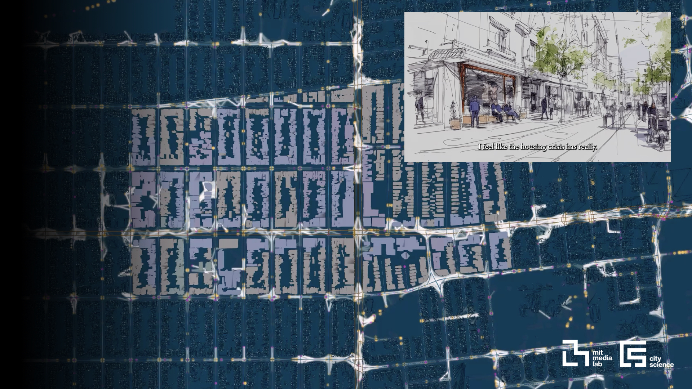

Computational Designer & Urban ResearcherMIT Media Lab

Work that reimagines how we inhabit our cities.
Recent publications
Featured in media, recognized with awards, and presenting at conferences worldwide.
Norman Foster Institute